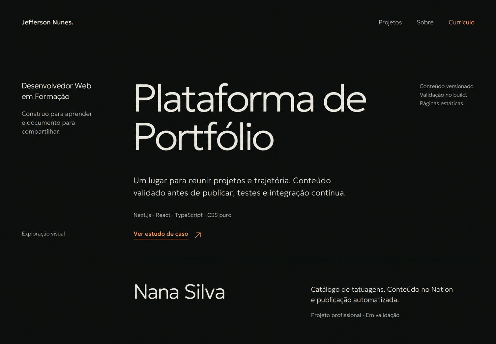
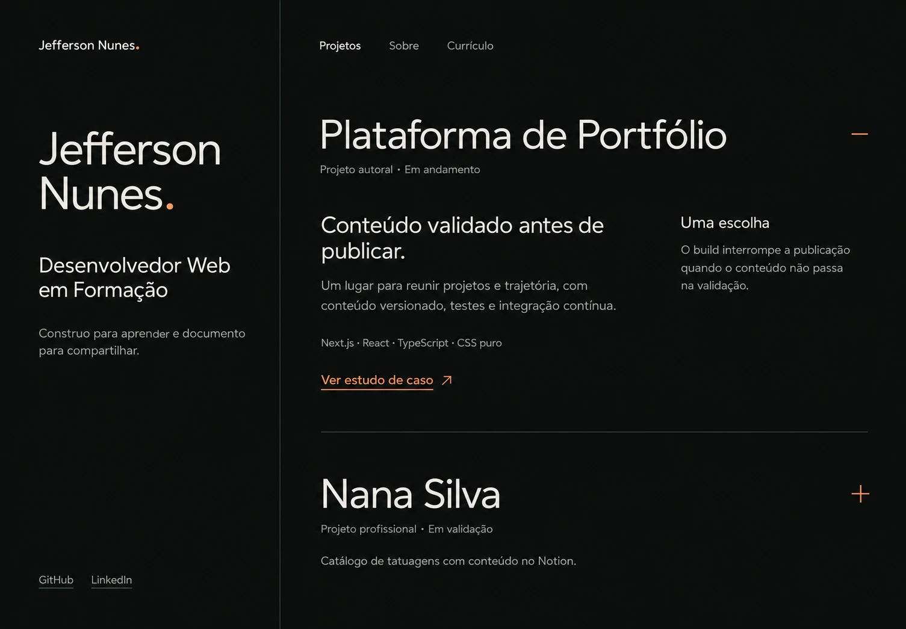
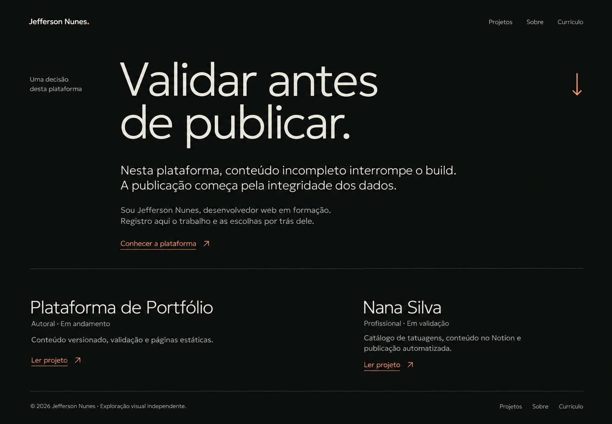

O mesmo minimalismo. Outras leituras.
Três estudos de composição para a página inicial. A mesma paleta, a mesma tipografia e um jeito diferente de apresentar o trabalho.
Uma exploração independente. O visual oficial permanece como está.
O trabalho abre
A plataforma ocupa o centro da primeira dobra. O projeto é a apresentação; o nome e o posicionamento acompanham a leitura pela margem.

- O que muda
- O nome deixa de dominar a abertura. O primeiro projeto ganha escala e prioridade.
- Como se lê
- Projeto, contexto, escolha técnica e estudo de caso. A leitura continua em Nana Silva.
- Ponto de atenção
- A identidade pessoal fica mais discreta do que na versão oficial.
Índice aberto
O nome ancora uma coluna lateral. Ao lado, os projetos formam o índice, com contexto e decisões revelados na própria linha.

- O que muda
- Apresentação e projetos dividem a tela. O índice substitui a sequência de seções.
- Como se lê
- A pessoa escolhe um projeto e consulta contexto, tecnologias e decisões no mesmo lugar.
- Ponto de atenção
- Parte do conteúdo dependeria da abertura de cada projeto na versão navegável.
Caderno de decisões
Uma escolha real da plataforma conduz a abertura: validar antes de publicar. Os projetos aparecem como contexto para o raciocínio.

- O que muda
- Uma decisão documentada assume o papel de título principal da página.
- Como se lê
- Escolha, motivo, autor e projetos. A composição se aproxima de uma nota de trabalho.
- Ponto de atenção
- A abordagem editorial exige mais leitura antes de chegar aos estudos de caso.
Prévias visuais geradas com IA para comparar composição. Os links e controles desenhados nas imagens são ilustrativos; cada prévia abre em tamanho maior. Nenhum candidato foi escolhido como novo visual.